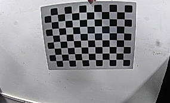
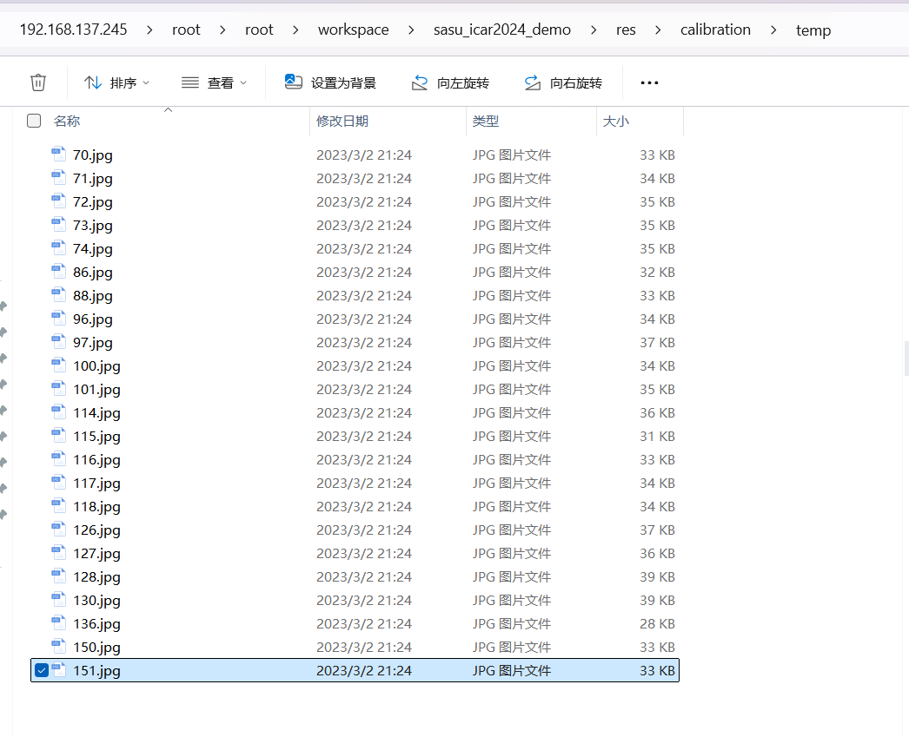

引入
使用c++学习
边读代码边用ai自学
calibration.cpp
根据定义类逐个了解
注：一开始看错了，以为是保存视频的cpp，结果是标定畸变的cpp

12*9的棋盘格，12行9列 （代码中是Size sizeBoard = Size(11, 8); ）（哪里理解有误？）
std::string
std::string 是标准C++库中的一个类，用于表示和操作字符串。
string imagesFolder = "../res/calibration/temp/"; // 打开标定图像
举例：读取图象文件
##include <opencv2/opencv.hpp>
##include <string>
int main() {
std::string imagePath = "path/to/your/image.jpg"; // 图像文件路径
cv::Mat image = cv::imread(imagePath); // 读取图像
if (image.empty()) {
std::cerr << "Could not open or find the image!" << std::endl;
return -1;
}
cv::imshow("Image", image); // 显示图像
cv::waitKey(0); // 等待按键事件
return 0;
}Size
Size 是OpenCV中用于表示尺寸的结构体，包含 width 和 height 两个成员。
在相机标定过程中，Size 被用来表示标定板的角点数（如 Size sizeBoard = Size(11, 8); 表示标定板有11行8列角点）和标定板上每个棋盘格的边长（如 Size sizeSquare = Size(20, 20); 表示每个棋盘格的边长为20x20毫米）。
Size 也被用来存储图像的尺寸，如代码中的 Size sizeImage;。在读取图像后，可以通过 imageInput.cols 和 imageInput.rows 获取图像的宽度和高度，并赋值给 sizeImage 的 width 和 height 成员。
Mat
代表了一个n维的密集数值单通道或多通道数组，可以用来存储图像、矩阵、直方图
创建Mat
构造函数：
Mat image = Mat(rows, cols, type, Scalar(value));
图像文件读取：Mat image = imread(filePath);
复制现有Mat对象：Mat imageCopy = image.clone();或Mat imageCopy = image;（注意：后者是浅拷贝，仅复制头部）
Mat cameraMatrix = Mat(3, 3, CV_32FC1, Scalar::all(0)); //创建一个3x3的浮点型矩阵，用于存储摄像机的内参矩阵。
Mat distCoeffs = Mat(1, 5, CV_32FC1, Scalar::all(0)); //创建一个1x5的浮点型矩阵，用于存储相机的畸变系数。
Mat imageInput = imread(imagesPath[i]); //从文件读取图像，存储为Mat类型。
Mat imageGray; cvtColor(imageInput, imageGray, CV_RGB2GRAY); //将彩色图像转换为灰度图像。
Mat mapx = Mat(sizeImage, CV_32FC1); 和 Mat mapy = Mat(sizeImage, CV_32FC1); //创建用于图像矫正的重映射参数矩阵。
/*************************************************************************************************************/
//Scalar 是一个用于表示四通道数值的结构体，通常用于指定颜色、像素值或其他需要四个数值的情况。
//尽管 Scalar 可以用于多通道数据，但在许多情况下，特别是当处理灰度图像或单通道数据时，我们只需要一个数值。
//Scalar::all(0) 是一个便捷的方法，用于创建一个所有通道值都设置为0的 Scalar 对象。这在初始化图像矩阵、设置像素值为黑色等方面非常有用。
//使用 CV_32FC1 表示这个矩阵是32位浮点数单通道矩阵。vector(c++内容)
一种序列容器，它允许你在运行时动态地插入和删除元素。
vector 是基于数组的数据结构，但它可以自动管理内存，这意味着你不需要手动分配和释放内存。
int main() {
// 创建一个空的整数向量
std::vector<int> myVector;
// 添加元素到向量中
myVector.push_back(3);
myVector.push_back(7);
myVector.push_back(11);
myVector.push_back(5);//vector<String> imagesPath; 这行代码定义了一个名为 imagesPath 的变量，该变量是一个 vector 容器，用于存储 String 类型的元素。
string imagesFolder = "../res/calibration/temp/"; // 打开标定图像
vector<String> imagesPath;
Display display(2); // 初始化UI显示窗口
glob(imagesFolder, imagesPath, false); // OpenCV提取文件夹中的所有文件
//imagesPath 被用来存储一系列图像文件的路径。
Display
赛鼠自定义类
/**
* @brief UI综合图像绘制
*
*/
class Display
{
private:
bool enable = false; // 显示窗口使能
int sizeWindow = 1; // 窗口数量
cv::Mat imgShow; // 窗口图像
public:
/**
* @brief 显示窗口初始化
*
* @param size 窗口数量(1~7)
*/
Display(const int size)
{
if (size <= 0 || size > 7)
return;
// cv::namedWindow("ICAR", WINDOW_NORMAL); // 图像名称
// cv::resizeWindow("ICAR", COLSIMAGE * size, ROWSIMAGE); // 分辨率
imgShow = cv::Mat::zeros(ROWSIMAGE, COLSIMAGE * size, CV_8UC3);
enable = true;
sizeWindow = size;
};
/**
* @brief 设置新窗口属性
*
* @param index 窗口序号
* @param name 窗口名称
* @param img 显示图像
*/
void setNewWindow(int index, string name, Mat img)
{
// 数据溢出保护
if (!enable || index <= 0 || index > sizeWindow)
return;
if (img.cols <= 0 || img.rows <= 0)
return;
Mat imgDraw = img.clone();
if (imgDraw.type() == CV_8UC1) // 非RGB类型的图像
cvtColor(imgDraw, imgDraw, cv::COLOR_GRAY2BGR);
// 图像缩放
if (imgDraw.cols != COLSIMAGE || imgDraw.rows != ROWSIMAGE)
{
float fx = COLSIMAGE / imgDraw.cols;
float fy = ROWSIMAGE / imgDraw.rows;
if (fx <= fy)
resize(imgDraw, imgDraw, Size(COLSIMAGE, ROWSIMAGE), fx, fx);
else
resize(imgDraw, imgDraw, Size(COLSIMAGE, ROWSIMAGE), fy, fy);
}
// 限制图片标题长度
string text = "[" + to_string(index) + "] ";
if (name.length() > 15)
text = text + name.substr(0, 15);
else
text = text + name;
putText(imgDraw, text, Point(10, 20), cv::FONT_HERSHEY_TRIPLEX, 0.5, cv::Scalar(255, 0, 0), 0.5);
Rect placeImg = cvRect(COLSIMAGE * (index - 1), 0, COLSIMAGE, ROWSIMAGE);
imgDraw.copyTo(imgShow(placeImg));
savePicture(img); // 保存图像
}
/**
* @brief 融合后的图像显示
*
*/
void show(void)
{
if (enable)
imshow("ICAR", imgShow);
}
};Display display(2);
//定义一个名叫display的Display对象，根据构造函数初始化为2个窗口。
Display(const int size)
{
if (size <= 0 || size > 7)
return;
// cv::namedWindow("ICAR", WINDOW_NORMAL); // 图像名称
// cv::resizeWindow("ICAR", COLSIMAGE * size, ROWSIMAGE); // 分辨率
imgShow = cv::Mat::zeros(ROWSIMAGE, COLSIMAGE * size, CV_8UC3);
enable = true;
sizeWindow = size;
};
//#define COLSIMAGE 320 // 图像的列数
// #define ROWSIMAGE 240 // 图像的行数
//CV_8UC3:::CV_8U：这表示数据类型是8位无符号整数（unsigned char），范围从0到255 C3：这表示通道数为3。在彩色图像处理中，三个通道通常对应于红色（R）、绿色（G）和蓝色（B），即RGB颜色空间glob
glob 函数用于查找符合特定模式的文件路径。
int glob(const string& pattern, vector<String>& result, bool recursive = false);pattern：要搜索的文件模式。这可以是一个包含通配符（如 * 和 ?）的字符串，用于匹配多个文件。
result：一个 vector
recursive：一个布尔值，指示搜索是否应递归地进入子文件夹。如果设置为 true，则 glob 将搜索指定文件夹及其所有子文件夹中的文件；如果设置为 false，则仅搜索指定文件夹中的文件。
glob(imagesFolder, imagesPath, false); // OpenCV提取文件夹中的所有文件
//这行代码的作用是搜索 imagesFolder 指定的文件夹，并将该文件夹中所有文件的路径存储在 imagesPath 容器中。struct stat
C++编程中，struct stat 是一个结构体，用于存储文件的状态信息。
这个结构体定义在POSIX标准中，并且在许多Unix-like系统（包括Linux和macOS）以及Windows的Cygwin环境中都是可用的。它包含了关于文件的各种信息，如文件大小、修改时间、权限等。
struct stat buffer;
//这行代码声明了一个名为 buffer 的 struct stat 类型的变量。这个变量将用于存储通过 stat 函数调用获取的文件状态信息。
string filename = getFilename(imagesPath[i]);
string img_path = "../res/calibration/corners/" + filename;
if (stat(img_path.c_str(), &buffer) != 0) // 判断文件夹是否存在
{
string command;
command = "mkdir -p ../res/calibration/corners/";
system(command.c_str()); // 利用os创建文件夹
}
// img_path.c_str() 将 std::string 类型的 img_path 转换为C风格的字符串（即 const char*），因为 stat 函数需要这种类型的参数。
// &buffer 是 struct stat 类型变量 buffer 的地址，stat 函数将把获取到的文件状态信息存储在这里。
// 如果 stat 函数返回非零值，通常表示指定的文件或文件夹不存在。在这种情况下，代码会创建一个新的文件夹。
// 总之，struct stat buffer; 这行代码声明了一个用于存储文件状态信息的变量，而后续的 stat 函数调用则利用这个变量来检查文件或文件夹的存在性。struct stat 是一个结构体，包含了文件或目录的各种状态信息，如文件大小、修改时间、权限等。这个结构体的具体字段可能因操作系统而异，但通常包含以下一些基本字段：
st_size：文件大小（以字节为单位）。
st_mode：文件类型和权限。
st_mtime：最后修改时间。
st_ctime：最后状态改变时间。
st_uid：文件所有者的用户ID。
st_gid：文件所有者的组ID。
stat函数
int stat(const char *pathname, struct stat *buf);pathname：这是一个指向以null结尾的字符串的指针，表示要检查的文件或目录的路径。
buf：这是一个指向 struct stat 类型的指针，函数将把获取到的文件或目录的状态信息存储在这个结构体中。
img_path.c_str()
C++中，std::string 类型是标准库提供的一个用于表示和操作字符串的类。然而，C语言风格的函数（如POSIX系统调用和某些C库函数）通常要求字符串参数是C风格的字符串，即以null结尾的字符数组（char* 类型）。
std::string 类提供了一个成员函数 c_str()，该函数返回一个指向C风格字符串的指针，该字符串与 std::string 对象的内容相同。这样，您就可以将 std::string 对象传递给需要C风格字符串参数的函数了。
string img_path = "../res/calibration/corners/" + filename;
if (stat(img_path.c_str(), &buffer) != 0) // 判断文件夹是否存在
{
// 创建文件夹的代码
}
// img_path 是一个 std::string 类型的变量，存储了图像文件的完整路径。
// img_path.c_str() 调用了 std::string 类的 c_str() 成员函数，返回了一个指向与 img_path 内容相同的C风格字符串的指针。
// stat 函数是一个POSIX系统调用，用于获取文件或目录的状态信息。它需要一个C风格的字符串作为文件路径参数。
// 因此，img_path.c_str() 在这里的作用是将 std::string 类型的 img_path 转换为C风格的字符串，以便将其作为参数传递给 stat 函数。这样，stat 函数就能够正确地解析文件路径并获取相应的状态信息了。Point2f
在OpenCV库中，Point2f 是一个用于表示二维点的类，其中“2”表示点的维度（即x和y坐标），“f”表示坐标值的数据类型为浮点数（float）。Point2f 类定义在 opencv2/core.hpp 头文件中，是OpenCV核心模块的一部分。
imread
在OpenCV库中，imread 函数用于从指定文件路径读取图像。
Mat imread(const std::string& filename, int flags = IMREAD_COLOR);filename：这是一个字符串参数，表示要读取的图像文件的路径。
flags：这是一个可选的整数参数，用于指定读取图像的方式。默认情况下，它的值为 IMREAD_COLOR（即1），表示以彩色模式读取图像。如果设置为 IMREAD_GRAYSCALE（即0），则以灰度模式读取图像；如果设置为 IMREAD_UNCHANGED（即-1），则包括图像的alpha通道（如果存在）。可以不填写
imread 函数返回一个 Mat 对象，该对象包含了读取的图像数据。如果图像文件成功读取，Mat 对象将包含图像的有效数据；如果读取失败（例如，文件不存在或路径错误），Mat 对象将是一个空矩阵。
vector<vector>和vector
vector<vector
用途：用于存储多张图像中检测到的所有角点坐标。外层的 vector 存储每张图像的角点信息，内层的 vector 存储单张图像中所有角点的坐标。
结构：可以想象成一个表格，其中每一行代表一张图像的角点信息，每一列代表一个角点的坐标（x和y）。
vector
用途：用于存储单张图像中检测到的角点坐标。
结构：可以想象成一个一维数组，其中每个元素代表一个角点的坐标（x和y）。
在代码中，pointsCorners 被初始化并用于存储所有图像的角点信息。在循环处理每张图像时，会创建一个临时的 pointCorners 向量来存储当前图像的角点坐标。如果当前图像中的角点数量符合要求（即角点数量等于标定板上的角点总数），则将这些角点坐标添加到 pointsCorners 中。
findChessboardCorners
黑盒
findChessboardCorners 函数是OpenCV库中用于检测图像中棋盘格角点的一个重要函数。该函数通常用于相机标定过程中，以提取标定板（棋盘格）的角点信息。
bool findChessboardCorners(InputArray image, Size patternSize, OutputArray corners,
int flags=CALIB_CB_ADAPTIVE_THRESH+CALIB_CB_NORMALIZE_IMAGE);image：输入图像，应为8位灰度图像或彩色图像。
patternSize：棋盘格的内角点数量，包括行数和列数。例如，一个8x8的棋盘格应使用Size(8,8)。
corners：检测到的角点输出，通常是一个std::vectorcv::Point2f类型的对象。
flags：可选参数，用于指定检测角点时的附加选项。默认为CALIB_CB_ADAPTIVE_THRESH和CALIB_CB_NORMALIZE_IMAGE的组合，这有助于在光照不均的情况下更好地检测角点。
函数返回一个布尔值，指示是否成功检测到足够数量的角点。如果返回true，则corners向量中将包含检测到的角点坐标；如果返回false，则表示检测失败，可能是因为图像中不存在棋盘格或角点数量不足。
Size sizeBoard = Size(11, 8); // 标定板的角点数(行,列)
vector<Point2f> pointCorners; // 用于存储单张图像中检测到的角点坐标
if (findChessboardCorners(imageInput, sizeBoard, pointCorners)) // 尝试检测图像中的棋盘格角点
{
// 如果检测到角点，则进行后续处理...
}
else
{
// 如果未检测到角点，则输出错误信息并退出程序
}cvtColor
黑盒
cvtColor 函数是OpenCV库中用于颜色空间转换的一个常用函数。该函数能够将图像从一个颜色空间转换到另一个颜色空间，比如从RGB颜色空间转换到灰度颜色空间。
Mat imageGray;
cvtColor(imageInput, imageGray, CV_RGB2GRAY);
//这里，imageInput是源图像（彩色图像），imageGray是目标图像（灰度图像），而CV_RGB2GRAY是指定的转换代码，表示将图像从RGB颜色空间转换到灰度颜色空间。void cvtColor(InputArray src, OutputArray dst, int code, int dstCn=0 );
// src：输入图像，可以是Mat类型的对象，表示源图像。
// dst：输出图像，也是Mat类型的对象，表示转换后的图像。
// code：转换代码，指定了颜色空间转换的类型。例如，CV_RGB2GRAY表示从RGB颜色空间转换到灰度颜色空间。
// dstCn：目标图像的通道数，如果参数为0，则由src和code决定。find4QuadCornerSubpix
黑盒
find4QuadCornerSubpix 是 OpenCV 库中提供的一个函数，
void find4QuadCornerSubpix(InputArray image, InputOutputArray corners,
Size winSize, Size zeroZone,
TermCriteria criteria);
// image：输入图像，应为灰度图像。
// corners：输入/输出向量，包含初步检测到的角点坐标。函数执行后，这些坐标将被更新为亚像素级别的精确位置。
// winSize：搜索窗口的尺寸。该窗口用于在每个角点周围进行搜索，以找到更精确的位置。
// zeroZone：死区尺寸，表示在搜索窗口中央的一个区域，该区域内的像素在角点位置估计时将被忽略。这有助于减少由于噪声或图像不均匀性引起的误差。
// criteria：迭代终止条件，包括最大迭代次数、角点位置变化的阈值等。find4QuadCornerSubpix(imageGray, pointCorners, Size(5, 5), Size(-1,-1),
TermCriteria(CV_TERMCRIT_EPS+CV_TERMCRIT_ITER, 30, 0.1));
// 这里，imageGray 是输入的灰度图像，pointCorners 是包含初步检测到的角点坐标的向量。Size(5, 5) 指定了搜索窗口的大小为 5x5 像素，Size(-1,-1) 表示不使用死区（即整个搜索窗口都将被考虑），而 TermCriteria 则设置了迭代终止条件：最多迭代 30 次，或直到角点位置的变化小于 0.1 像素。cv::namedWindow
黑盒
在OpenCV库中，cv::namedWindow 函数用于创建一个窗口，该窗口可以用于显示图像或视频流。
// 在提供的代码片段中，cv::namedWindow 函数被用来创建一个名为 "Corners" 的窗口，并且允许用户调整窗口大小：
std::string windowName = "Corners";
cv::namedWindow(windowName, WINDOW_NORMAL); // 创建一个允许用户调整大小的窗口
imshow("Corners", imageInput); // 在窗口中显示图像
// 这里，windowName 是一个字符串变量，存储了窗口的名称 "Corners"。cv::namedWindow 函数使用这个名称创建一个窗口，并通过 WINDOW_NORMAL 标志允许用户手动调整窗口大小。随后，imshow 函数被用来在这个窗口中显示 imageInput 图像。void namedWindow(const std::string& winname, int flags = WINDOW_AUTOSIZE);
// winname：窗口的名称，它是一个字符串，用于唯一标识窗口。在后续的图像处理操作中，你可以通过这个名字来引用这个窗口。
// flags：窗口创建标志，它是一个可选参数，默认值为WINDOW_AUTOSIZE。这个参数可以控制窗口的大小和属性。
// 标志选项
// WINDOW_AUTOSIZE：窗口大小自动调整以适应显示的图像大小。如果图像大小改变，窗口大小也会相应改变。
// WINDOW_NORMAL：用户可以调整窗口大小。这是与WINDOW_AUTOSIZE相对的一个选项，允许用户手动调整窗口的大小。system
system 函数被用来执行操作系统命令，
int system(const char *command);
// command：一个指向以 null 结尾的字符串的指针，该字符串包含了要执行的命令。string command = "mkdir -p ../res/calibration/corners/";
system(command.c_str());
// 这里，command 是一个字符串变量，存储了要执行的命令 "mkdir -p ../res/calibration/corners/"。mkdir 是 Unix/Linux 系统中用于创建目录的命令，-p 选项表示如果父目录不存在，则一并创建它们。command.c_str() 将 std::string 类型的 command 转换为 const char* 类型，因为 system 函数需要一个 C 风格的字符串参数。imwrite
在OpenCV库中，imwrite 函数用于将图像保存到指定的文件路径
bool imwrite(const std::string& filename, InputArray img,
const std::vector<int>& params = std::vector<int>());
// filename：图像文件的路径和名称，包括文件扩展名（如 .jpg、.png 等），它决定了图像的保存格式。
// img：要保存的图像，通常是一个 Mat 类型的对象。
// params：特定于格式的保存参数，是一个可选参数。对于大多数格式来说，这个参数可以省略。imwrite(img_path, imageInput);
// 这里，img_path 是一个字符串变量，存储了图像文件的完整路径和名称。imageInput 是一个 Mat 类型的对象，包含了要保存的图像数据。通过调用 imwrite 函数，imageInput 中的图像数据将被写入到 img_path 指定的文件中。imshow
在OpenCV库中，imshow 函数用于在窗口中显示图像
void imshow(const std::string& winname, InputArray mat);
// winname：窗口名称，它是一个字符串，用于指定显示图像的窗口。如果窗口不存在，imshow 会创建一个新窗口；如果窗口已存在，则会在该窗口中显示图像。
// mat：要显示的图像，通常是一个 Mat 类型的对象。这个图像会被显示在指定的窗口中。imshow("Corners", imageInput); // 在名为 "Corners" 的窗口中显示图像
// 这里，"Corners" 是窗口的名称，imageInput 是要显示的图像数据。通过调用 imshow 函数，imageInput 中的图像将被显示在名为 "Corners" 的窗口中。waitKey
waitKey 函数通常与 imshow 函数一起使用，用于控制图像显示窗口的持续时间以及处理键盘事件。
int waitKey(int delay = 0);
// delay：等待键盘事件的时间（以毫秒为单位）。如果 delay 大于 0，函数将等待指定的时间；如果 delay 等于 0，函数将无限期地等待，直到有键盘事件发生。waitKey(500); // 停顿500ms
// 这里，waitKey 函数被调用时传入了参数 500，表示函数将等待 500 毫秒。在这 500 毫秒内，如果用户按下任意键，函数将立即返回按键的 ASCII 码；如果没有按键事件发生，函数将在 500 毫秒后返回 -1。calibrateCamera
黑盒
calibrateCamera 是 OpenCV 中用于相机标定的核心函数，它根据已知的三维世界坐标和对应的二维图像坐标来计算相机的内参矩阵、畸变系数、旋转向量和平移向量。在提供的代码片段中，calibrateCamera 函数被用来开始标定过程。
double calibrateCamera(InputArrayOfArrays objectPoints,
InputArrayOfArrays imagePoints,
Size imageSize,
InputOutputArray cameraMatrix,
InputOutputArray distCoeffs,
OutputArrayOfArrays rvecs,
OutputArrayOfArrays tvecs,
int flags = 0,
TermCriteria criteria = TermCriteria(TermCriteria::COUNT + TermCriteria::EPS, 30, 1e-6));
// objectPoints：三维世界坐标点的集合，每个元素是一个包含多个 Point3f 对象的向量，表示一幅图像中所有角点的三维坐标。
// imagePoints：二维图像坐标点的集合，每个元素是一个包含多个 Point2f 对象的向量，表示一幅图像中所有角点的二维坐标。
// imageSize：图像的大小，通常使用 Size(width, height) 来表示。
// cameraMatrix：输入/输出参数，相机的内参矩阵（3x3）。如果提供的是一个空矩阵，函数将自动初始化它。
// distCoeffs：输入/输出参数，相机的畸变系数（1x5或1x8）。如果提供的是一个空矩阵，函数将自动初始化它。
// rvecs：输出参数，每幅图像的旋转向量。
// tvecs：输出参数，每幅图像的平移向量。
// flags：标定方法的标志，可以是0或者以下标志的组合：
// CALIB_USE_INTRINSIC_GUESS：使用提供的 cameraMatrix 和 distCoeffs 作为初始猜测值，而不是自动初始化。
// CALIB_FIX_PRINCIPAL_POINT：主点已经固定，不会改变。此时，它应该位于图像的中心。
// CALIB_FIX_ASPECT_RATIO：假设 fx 和 fy 是固定的，并且它们的比值与输入的内参矩阵中的比值相同。
// CALIB_ZERO_TANGENT_DIST：切向畸变系数（p1, p2）被设置为零，并保持为零。
// CALIB_FIX_K1,...,CALIB_FIX_K6：对应的径向畸变系数在优化过程中保持不变。
// CALIB_RATIONAL_MODEL：启用畸变的理性模型（8个系数）。
// CALIB_THIN_PRISM_MODEL：启用薄棱镜畸变模型（12个系数）。
// CALIB_FIX_S1_S2_S3_S4：薄棱镜畸变系数在优化过程中保持不变。
// CALIB_TILTED_MODEL：启用倾斜传感器模型（12个系数）。
// criteria：迭代优化算法的终止条件。calibrateCamera(pointsObject, pointsCorners, sizeImage, cameraMatrix, distCoeffs, rvecsMat, tvecsMat, 0);
// 这里，pointsObject 是三维世界坐标点的集合，pointsCorners 是二维图像坐标点的集合，sizeImage 是图像的大小，cameraMatrix 是相机的内参矩阵（初始化为全零矩阵），distCoeffs 是相机的畸变系数（初始化为全零矩阵），rvecsMat 用于存储每幅图像的旋转向量，tvecsMat 用于存储每幅图像的平移向量，0 表示使用默认的标定方法标志。fout
在 C++ 编程中，cout 和 fout 是两种不同的输出流，它们用于将信息输出到不同的目的地。
- cout 是标准输出流（std::ostream 的一个实例），通常用于将信息输出到控制台或终端。
- fout
// 类型：fout 是一个文件输出流（std::ofstream 的一个实例），用于将信息写入到文件中。
// 用途：fout 通常用于将程序的关键输出、报告或数据保存到磁盘上的文件中，以便后续分析、存档或共享。
// 示例：在提供的代码片段中，fout 被用来将相机标定的分辨率写入到 assessment.txt 文件中：
ofstream fout("../res/calibration/assessment.txt"); // 打开文件用于写入
fout << "相机标定分辨率: " << sizeImage.width << "x" << sizeImage.height << "\n";
// 目的地不同：cout 输出到控制台，而 fout 输出到文件。
// 用途不同：cout 多用于即时调试和显示结果，fout 多用于持久化保存数据和报告。projectPoints
projectPoints 是 OpenCV 库中用于相机标定的一个重要函数，它根据相机的内参矩阵、畸变系数、旋转向量和平移向量，将三维空间中的点投影到二维图像平面上。
void projectPoints(InputArray objectPoints,
InputArray rvec,
InputArray tvec,
InputArray cameraMatrix,
InputArray distCoeffs,
OutputArray imagePoints,
OutputArray jacobian = noArray(),
double aspectRatio = 0);
// objectPoints：输入参数，三维空间中的点，通常是一个包含多个 Point3f 对象的向量。
// rvec：输入参数，旋转向量，表示相机相对于世界坐标系的旋转。
// tvec：输入参数，平移向量，表示相机相对于世界坐标系的平移。
// cameraMatrix：输入参数，相机的内参矩阵。
// distCoeffs：输入参数，相机的畸变系数。
// imagePoints：输出参数，投影到图像平面上的二维点，通常是一个包含多个 Point2f 对象的向量。
// jacobian：可选输出参数，雅可比矩阵，通常不需要。
// aspectRatio：可选参数，用于设置图像像素的纵横比，如果设置为 0，则使用 cameraMatrix 中的值。vector<Point3f> tempPointSet = pointsObject[i];
projectPoints(tempPointSet, rvecsMat[i], tvecsMat[i], cameraMatrix, distCoeffs, pointsImage);
// 这里，tempPointSet 包含了三维空间中标定板上的角点坐标，rvecsMat[i] 和 tvecsMat[i] 分别表示第 i 幅图像的旋转向量和平移向量，cameraMatrix 是相机的内参矩阵，distCoeffs 是相机的畸变系数。函数执行后，pointsImage 将包含这些三维点投影到第 i 幅图像平面上的二维点坐标。collection.cpp
遥控手柄宏
class Joystick
{
private:
const int JS_EVENT_BUTTON = 0x01; // 遥控手柄宏：按钮类型 按下/释放
const int JS_EVENT_AXIS = 0x02; // 遥控手柄宏：摇杆类型
const int JS_EVENT_INIT = 0x80; // 遥控手柄宏：设备初始状态
/**
* @brief 遥控手柄事件数据结构
*
*/
struct EventJoy
{
unsigned int time; // 手柄触发时间：ms
short value; // 操控值
unsigned char type; // 操控类型：按键/摇杆
unsigned char number; // 编号
};
struct EventJoy joy;
int idFileJoy = 0;
std::unique_ptr<std::thread> threadJoy; // 遥控手柄子线程
public:
bool sampleMore = false; // 连续图像采样使能
bool sampleOnce = false; // 单次图像采样使能
float speed = 0; // 车速：m/s
float servo = PWMSERVOMID; // 打舵：PWM
bool ahead = true; // 车辆速度方向:默认向前
bool uartSend = false; // 串口发送使能
bool buzzer = false; // 提示音效
/**
* @brief 解析函数
*
*/
Joystick(void)
{
// 遥控手柄启动
idFileJoy = open("/dev/input/js0", O_RDONLY);
joy.number = 0;
};
/**
* @brief 遥控手柄线程关闭
*
*/
void close(void)
{
threadJoy->join();
// close(idFileJoy);
}
/**
* @brief 遥控手柄子线程启动
*
*/
void start(void)
{
threadJoy = std::make_unique<std::thread>([this]()
{
while (1)
{
threadJoystick();
} });
}
/**
* @brief 游戏手柄控制-多线程任务
*
*/
void threadJoystick(void)
{
read(idFileJoy, &joy, sizeof(joy));
int type = JS_EVENT_BUTTON | JS_EVENT_INIT;
if (joy.type == JS_EVENT_AXIS) // 摇杆
{
// cout << "AXIS: " << to_string(joy.number) << " | " << to_string(joy.value) << endl;
switch (joy.number)
{
case 0: // 方向控制
servo = PWMSERVOMID + joy.value * (PWMSERVOMID - PWMSERVOMIN) / 32767;
uartSend = true;
break;
case 5: // 两档速度选择:慢速档
if (joy.value >= 1)
{
if (ahead)
speed = 0.3;
else
speed = -0.3;
uartSend = true;
}
else
{
speed = 0.0;
uartSend = true;
}
break;
case 7: // 速度方向控制
if (joy.value < 0) // 向前
{
ahead = true;
if (speed < 0)
{
speed = -speed;
uartSend = true;
}
buzzer = true; // 蜂鸣器音效
}
else if (joy.value > 1) // 向后
{
ahead = false;
if (speed > 0)
{
speed = -speed;
uartSend = true;
}
buzzer = true; // 蜂鸣器音效
}
break;
}
}
else if (joy.type == JS_EVENT_BUTTON) // 按键
{
// cout << "BUTTON: " << to_string(joy.number) << " | " << to_string(joy.value) << endl;
switch (joy.number)
{
case 5: // 两档速度选择: 高速档
if (joy.value >= 1)
{
if (ahead)
speed = 0.5;
else
speed = -0.5;
uartSend = true;
}
else
{
speed = 0.0;
uartSend = true;
}
break;
case 2: // 开始单次采图
if (joy.value == 1)
{
buzzer = true; // 蜂鸣器音效
sampleOnce = true; // 开启单张采图使能
}
break;
case 3: // 开始连续采图
if (joy.value == 1)
{
buzzer = true; // 蜂鸣器音效
sampleMore = true; // 开启连续采图使能
}
break;
case 0: // 停止采图
if (joy.value == 1) // 关闭采图使能
{
sampleMore = false;
sampleOnce = false;
buzzer = true; // 蜂鸣器音效
}
break;
default: // 任意键停止运动
speed = 0;
uartSend = true;
break;
}
}
}
};private（私有部分）:
- JS_EVENT_BUTTON 按钮类型
- JS_EVENT_AXIS 摇杆类型
- JS_EVENT_INIT 设备初始状态
- EventJoy结构体的joy 游戏手柄事件结构体(触发时间time，操控值value，操控类型type，操控编号number)
- idFileJoy：文件描述符
- threadJoy：子线程指针 (详情如下)
std::unique_ptr<std::thread> threadJoy; // 遥控手柄子线程
//用于定义一个指向 std::thread 的智能指针
//std::unique_ptr 是 C++11 引入的一种智能指针，用于管理动态分配的对象。它保证每个动态分配的对象只能有一个所有者，当所有者（std::unique_ptr）被销毁时，它所管理的对象也会被自动销毁。
//std::thread 是 C++11 标准库中的一个类，用于表示一个可执行的线程。通过 std::thread，我们可以创建并管理独立的线程，这些线程可以并行执行不同的任务。
public（公有部分）:
- bool sampleMore = false; // 连续图像采样使能
- bool sampleOnce = false; // 单次图像采样使能
- float speed = 0; // 车速：m/s
- float servo = PWMSERVOMID; // 打舵：PWM
- bool ahead = true; // 车辆速度方向:默认向前
- bool uartSend = false; // 串口发送使能
- bool buzzer = false; // 提示音效
- 同名构造函数joystick()-⇒让文件描述符idFileJoy指向手柄事件（初始化）
- 关闭线程threadJoy
- 开启线程threadJoy
void start(void)
{
threadJoy = std::make_unique<std::thread>([this]()
{
while (1)
{
threadJoystick();
} });
}
// 该线程将不断调用 threadJoystick 方法来处理遥控手柄的输入事件。
//std::make_unique<std::thread>([this](){...})：使用 std::make_unique 创建一个 std::thread 对象的唯一指针，并将其赋值给 threadJoy。这里使用了 C++11 引入的 lambda 表达式作为线程函数的参数。
//[this]：lambda 表达式捕获列表中的 this 关键字表示捕获当前 Joystick 对象的指针，使得在 lambda 函数内部可以访问 Joystick 类的成员变量和方法。
//while (1) { threadJoystick(); }：线程函数是一个无限循环，不断调用 threadJoystick 方法。这意味着一旦线程启动，它将持续运行，不断读取和处理遥控手柄的输入事件，直到 Joystick 对象被销毁且 threadJoy 被自动销毁，从而终止线程。- 遥控线程任务threadJoystick
lambda表达式：
Lambda 表达式是 C++11 引入的一种简洁的定义匿名函数对象的方式。它们可以捕获外部变量，并用于需要函数对象的场合，如算法的标准库函数或作为线程函数。
void start(void)
{
threadJoy = std::make_unique<std::thread>([this]()
{
while (1)
{
threadJoystick();
} });
}
// [this]：捕获列表中的 this 关键字表示捕获当前 Joystick 对象的指针。这使得在 Lambda 表达式内部可以访问 Joystick 类的成员变量和方法。
主函数部分
shared_ptr
shared_ptr
语句用于创建一个指向 Uart 类实例的智能指针 uart，并通过构造函数传递设备文件路径 /dev/ttyUSB0 来初始化串口驱动。
VideoCapture
VideoCapture capture("/dev/video0");
//VideoCapture capture("/dev/video0"); 语句用于初始化一个 VideoCapture 对象，该对象用于从指定的视频源（在本例中是 /dev/video0）捕获视频帧。
//VideoCapture：这是 OpenCV 库中用于视频捕获的类。它提供了从摄像头、视频文件等视频源捕获视频帧的功能。
//通过调用 capture.isOpened() 方法来检查摄像头是否成功初始化。
//调用 capture.read(frame) 方法来从摄像头捕获视频帧，其中 frame 是一个 Mat 类型的对象，用于存储捕获到的图像数据。
//调用 capture.set() 方法来设置捕获属性，如图像的分辨率、帧率等。putText
putText 是 OpenCV 库中的一个函数，用于在图像上指定位置添加文本。
putText(frame, to_string(index), Point(10, 30), cv::FONT_HERSHEY_TRIPLEX, 1, cv::Scalar(0, 0, 254), 1, CV_AA); // 显示图片保存序号
// imshow("ingFrame", frame);
// frame：这是一个 Mat 类型的对象，代表要在其上添加文本的图像。
// to_string(index)：这是要添加到图像上的文本内容，这里使用 to_string 函数将整数 index 转换为字符串。
// Point(10, 30)：这指定了文本在图像上的起始位置，其中 (10, 30) 分别表示文本左下角的 x 和 y 坐标。
// cv::FONT_HERSHEY_TRIPLEX：这是文本的字体类型。OpenCV 提供了多种字体类型，如 FONT_HERSHEY_SIMPLEX、FONT_HERSHEY_PLAIN 等。
// 1：这是字体的大小（缩放因子），可以根据需要调整。
// cv::Scalar(0, 0, 254)：这是文本的颜色，这里使用的是 BGR 格式，表示蓝色。
// 1：这是文本的线条粗细。
// CV_AA：这是抗锯齿标志，用于改善文本的渲染质量。img2video.cpp
- 帧率（frame_fps）：20帧/s
- 帧宽（frame_width）：每一帧的宽度，这里设置为320像素。
- 帧高（frame_height）：每一帧的高度，这里设置为240像素。
VideoWriter
在OpenCV中，VideoWriter类用于创建视频文件并向其中写入帧。它是处理视频输出的核心类。
writer = VideoWriter("../res/samples/sample.mp4", CV_FOURCC('P', 'I', 'M', '1'),
frame_fps, Size(frame_width, frame_height), true);
// 这行代码初始化了VideoWriter对象writer，其参数意义如下：
// 第一个参数："../res/samples/sample.mp4"，指定输出视频文件的路径和名称。
// 第二个参数：CV_FOURCC('P', 'I', 'M', '1')，指定视频编解码器的四字符代码（Four-Character Code, FOURCC）。'P', 'I', 'M', '1'对应的是MPEG-1编解码器。
// 第三个参数：frame_fps，指定视频的帧率，即每秒播放的帧数。在此代码中，帧率为20帧/秒。
// 第四个参数：Size(frame_width, frame_height)，指定视频帧的大小。Size是一个结构体，用于存储宽度和高度。在此代码中，帧的宽度为320像素，高度为240像素。
// 第五个参数：true，指定视频是否为彩色。true表示彩色视频，false表示灰度视频。writer << img
writer << img;
//在img2video.cpp文件中，writer << img;语句的作用是将img对象（一个Mat类型的图像）写入到之前通过VideoWriter对象writer初始化的视频文件中
// writer对象：这是一个VideoWriter类型的对象，用于创建和写入视频文件。它已经在之前的代码中通过指定文件名、编解码器、帧率、帧大小和是否为彩色视频等参数进行了初始化。
// img对象：这是一个Mat类型的对象，代表一个图像。它通过imread函数从指定路径读取图像数据。
// 循环结构：writer << img;语句位于一个循环内部，该循环遍历一系列图像文件，并将它们逐个写入视频文件。